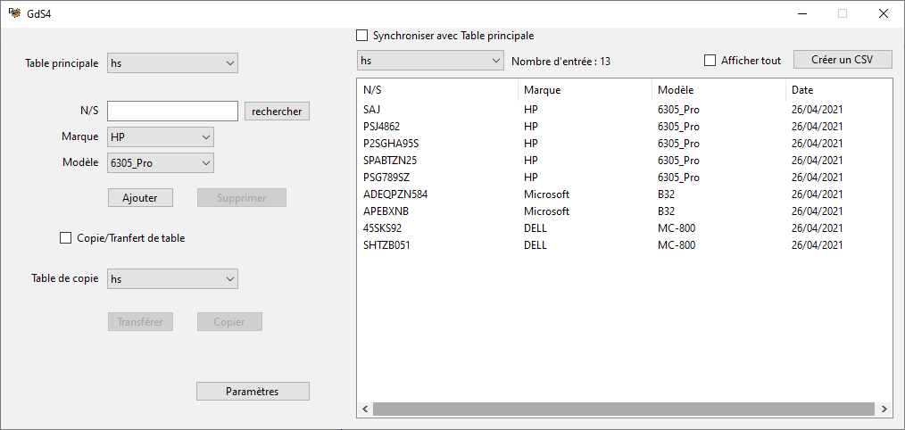
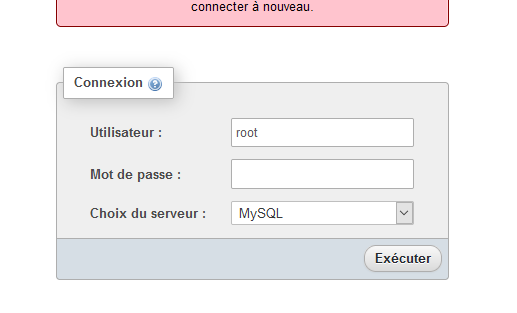
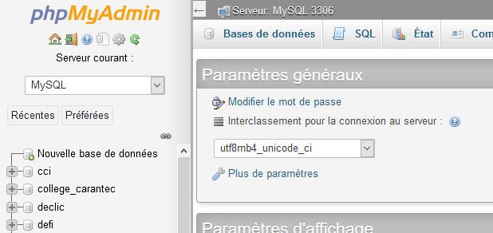
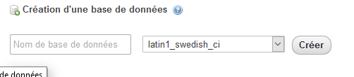
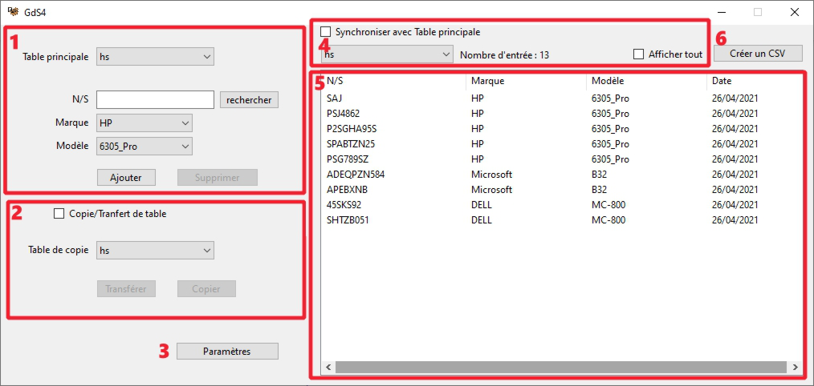
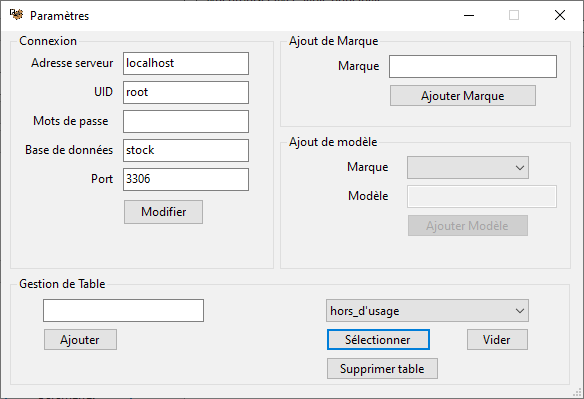
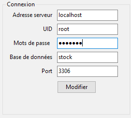
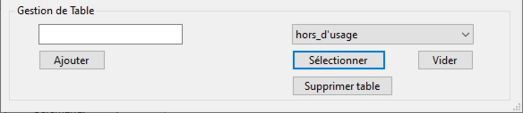
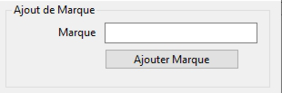
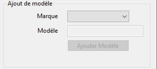

Condition D'utilisation
GdS4 est un logiciel de gestion de stock destiner au chantier d’insertion. Pour l’utilise il est nécessaire d’installer les framework .Net et d’être sous Windows (le logiciel a été développé pour Windows 10, je ne l’ai pas test sous un autre système d’exploitation). De plus, il nécessite un serveurs MySQL pour fonctionner, je vous conseille donc de télécharger WampServer
Créer une base de donnée
Avant de pouvoir utiliser le logiciel vous devez créer une base de données. Vous pouvez lui donne le nom que vous voulez ce ne sera pas gênant, mais sachez que par défaut il cherchera une base de données nommée « stock ». Notez que vous ne pourrez pas mettre de majuscule au nom de la base de données.
Pour créer une base de données commencer par installer WampServer puis lancer le, l’icône de Wamp devrai apparaître en bas à droite, si ce n’est pas le cas cliquer sur la flèche pour faire apparaître les icônes cachés.
Cliquer sur l’icône, puis sur phpmyadmin. Cela ouvrira le serveur dans un navigateur internet. Il vous demandera vous identifier écrivez « root » dans le nom utilisateur, laissez le mots de passe blanc, et selection « MySQL » dans choix du serveur. Si vous voulez mettre un mot de passe laisse trouver comment faire sur internet ce n’est pas très utile en locale.

Vous devriez arriver sur la page phpMyAdmin.

Cliquez sur nouvelle base de données, remplacez « latin1_swedish_ci » par « utf8_general_ci », nommez la base de données puis cliquez sur créer.

Vérifiez que la base de données apparaît dans la liste à droite. À partir de là vous pourrez gérer la base de données depuis la logiciel.
Le Fonctionnement du logiciel
Voici comme ce découpe la fenêtre principale :

Les fonctions principales (1)
- Dans « Table principal » vous sélectionnez la table dans la quelle vous souhaitez ajouter, supprimer ou rechercher une entrée.
- « N/S » est le champ où vous entrez les numéros de séries. En cliquant sur le bouton « Rechercher » qui se trouve à côté, vous lancerez dans la table principale une recherche du numéro de série entrée. Si le numéro y est déjà tous les champ seront automatiquement remplis.
- Dans « Marque » vous sélectionnez la marque de l’appareil, les choix du champ Modèle dépendent de ce champ.
- Dans « Modèle » vous sélectionnez le modèle l’appareil.
- Le bouton « Ajouter » sert à ajouter une entrée dans la table sélectionner, le programme vérifiera que le numéro de série n’est pas déjà dans la table avant de l’ajouter. Le bouton se verrouille quand vous lancez une recherche et se déverrouille quand vous modifier le numéro de série.
- Le bouton « Supprimer » sert à supprimer une entrée de la table sélectionner, il n’est cliquable que si vous avez recherché le numéro de série ou si vous l’avez sélectionnée depuis le tableau.
Copie et transfère(2)
- « Table de copie » indique la table dans la copier/transférer la/les entrée de la « Table principal ».
- « Copie/Transfère de table » sert à choisir si vous allez copier/transférer une seule entrée où toutes les entrées de la table principale. Si il est coché, les action se feront sur une table entière.
- Le bouton « Copier » sert à lancer la copie. Il n’est cliquable qu’après une recherche, que vous ayez sélectionnée une entrée dans le tableau ou si « Copie/Transfère de table » est coché. Dans ce dernier cas il copiera entièrement la « Table principal » dans la « Table de copie ». Si un numéro de série est déjà présent dans la « Table de copie » l’entrée correspondante ne sera pas copiée.
- Le bouton « Transférer » fait la même chose que le bouton « Copie » en effaçant en plus les entrées de la table principale. Attention si « Copie/Transfère de table » est coché il effacera entièrement les données de la « Table principal »
Le tableau et son gestionnaire d’affichage(4 et 5)
- Le tableau afficher les entrée de la table sélection dans le champ en haut à gauche de celui-ci. Si vous double cliquez sur un numéro de série, le programme remplira automatiquement « N/S » et recherchera le numéro cliqué dans la « Table principal », un message s’affichera si le numéro n’est pas trouvé.
- « Synchroniser avec Table principal » permet de synchroniser l’affichage du tableau avec « Table principal », si il est coché modifier l’un modifiera l’autre.
- Le compteur « Nombre d’entrée » indique le nombre d’entrée dans la table afficher.
- « Afficher tous » si coché affiche toutes les entrées de la table afficher, dans le cas contraire seul les 9 dernières entrées seront affichées.
La fenêtre paramètre

La fenêtre de paramètres sert à configurer la connexion, à ajouter des marque et des modèle, et à gérer les tables.

Si vous avez installé Wamp et créé une base de donnée en suivant mes instructions, vous ne devriez pas avoir à changer autre chose que le nom de la base de données. Faisons en tout de même le tour.
- Adresse serveur : contient l’adresse IP du serveurs utilisé, si ce serveur est sur votre ordinateur(comme ça devrai être le cas pour vous), vous pouvez aussi écrire « localhost ».
- UID : est l’identifiant utilisateur (par défaut WampServer vous donnera « root »).
- Mots de passe : le mot de passe lié à votre identifiant utilisateur( est vide par défaut sur pour « root »).
- Base de données : contiens le nom de la base de données avec laquelle vous travaillez (par défaut le logiciel utilisera « stock » si vous avez nommé votre base de données autrement changez le par le nom de votre base de données).
- Port : contiens le numéro de port de connexion ouvre (par défaut votre ordinateur utilisera le port « 3306 »)
Gestion de Table

Gestion de Table sert a ajouter, supprimer et vider des tables de votre base de données.
- Le champ de gauche et le bouton « Ajouter » servent à créer de nouvelle table dans la base de données.
- Le champ à droite permet de choisir la table sur la quelle les bouton « Sélectionner », « Vider » et « Supprimer table ».
- Le bouton « Sélectionner » permet de choisir la table que le logiciel utilisera par défaut.
- Le bouton « Vider » sert à effacer les données de la table indiquée dans le champ à droite.
- Le bouton « Supprimer » permet d’effacer une table.
Ajout de marque
Ajout de marque permet d’ajouter des marque à la liste. Entrer simplement le nom de la marque et cliquer sur « Ajouter Marque ».

Ajout de modèle
Ajout de modèle permet d’ajouter de modèle à la liste. Les modèles son liés à des marques, vous devez choisir une marque avant de pouvoir entrer le modèle. Une fois le modèle entré cliquez sur « Ajouter Modèle ».
